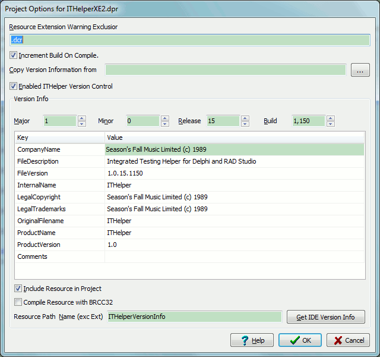

This dialogue allows you to specify various optiosn for the specifiy project you are compiling.
Enable ITHelper Version Control - This option enables the creation of a resource file managed by ITHelper. You need to ensure that the IDE does not include version information in the project's main resource as you will get duplicate version resource messages.
The Major, Minor, Release and Build numbers refer to the version information and if this is enabled it is these numfers that are incremented or changes through the increment on compile and copy version inforamtion items above.
The table below allow you to specify additionak version information. Note: The FileVersion items is automatically updated when the numbers above are changed.
Include Resource In Project - This make ITHelper add the resource files (RC), which it builds, to be included in the project and therefore managed by the project
Compile the Resource with BRC32 - This pre-compiles the RC file into a RES file. You only need to use this on early compilers where the IDE does not do this for you or where you want to manage the RES file manually.
Resource Path Name (exc Ext) - This is the name of the resource (RC) file that ITHelper will create which will contain the version information and optionally be included in the project. You MUST not include the extension and you can specify relative paths (not full paths). The relativity is with respect to the main project file.
These project settings are stored in a ProjectName.ITHelper ini file in the
same directory as the project.